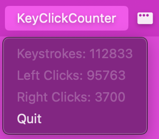

LINK TO GITHUB:
https://github.com/jhartfie/MacTrac
MacTrac - a keystroke and click counter
This project represents my enthusiasm for creating practical software
solutions to enhance user experience on macOS. MacTrac is a Python
application designed to run in the taskbar of Mac computers, tracking
keystrokes, left clicks, and right clicks by incrementing a counter each
time an action is performed.
Key Features:
Real-time Keystroke Tracking: MacTrac monitors and
counts every keystroke in real-time, providing users with accurate
feedback on their typing activity. This feature is essential for users
who want to track their productivity or monitor their keyboard usage
patterns.
Left Click Monitoring: The application counts each left
mouse click, incrementing the counter to reflect the total number of
clicks. This functionality helps users understand their mouse usage and
can be useful for ergonomic assessments or productivity tracking.
Right Click Monitoring: Similar to left click
monitoring, MacTrac tracks right mouse clicks, ensuring comprehensive
monitoring of user interactions. This feature is particularly beneficial
for users who rely heavily on right-click functionalities in their
workflows.
Taskbar Integration: Designed to run seamlessly in the
Mac taskbar, MacTrac provides a non-intrusive and easily accessible
interface. Users can quickly glance at their activity counters without
interrupting their work, making it a convenient tool for continuous
monitoring.
Simple and Intuitive Interface: The user interface of
MacTrac is designed for simplicity and ease of use. The counters for
keystrokes, left clicks, and right clicks are displayed clearly,
allowing users to monitor their activity at a glance.
Lightweight and Efficient: MacTrac is built to be a
lightweight application that does not consume significant system
resources. It runs efficiently in the background, ensuring that it does
not interfere with the user's primary tasks or degrade system
performance.
Through this project, I aimed to create a useful utility for macOS
users, demonstrating my skills in Python programming and user interface
design. MacTrac stands as a testament to my commitment to developing
practical, user-friendly, and efficient software solutions.
PICTURES NBA Project:
